The Game
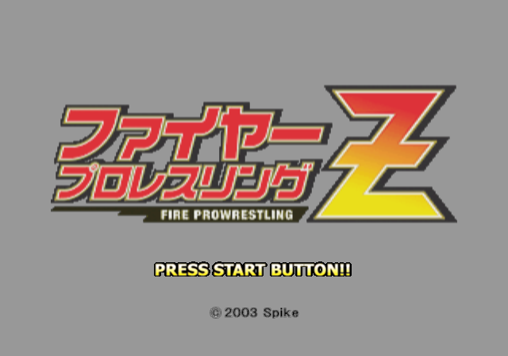
Fire Pro Wrestling Z came out for the PlayStation 2 on 5 June 2003, published by Spike, in Japan only. The Fire Pro team known inside the series as S-NEO made it with Paon. It looks modest for its year: flat sprite wrestlers on a tilted ring, viewed corner-on, the same view the series has used since the Super Famicom. That is the point. Fire Pro has never been about button-mashing or big health bars. It is a game of timing, stamina and wrestling logic, where a match rises and falls like a real one and the best moment of the night might be a two-count.
The box signed the series off with Thank you, Fire Pro. Goodbye, Fire Pro, and it sold about 61,000 copies, more than Fire Pro Wrestling D before it. Two years later Fire Pro Wrestling Returns took the farewell back.
The disc holds 244 wrestlers, 1,448 moves, five match types from a plain three-count to an exploding cage, a wrestler maker with room for 216 saved wrestlers, six Victory Road title chases adding up to 343 wins, and seven story scenarios telling real careers across more than 12,000 pages of text. One of those scenarios sat on the disc unfinished and unreachable, and is playable for the first time in this translation's All Unlocked patches.
What Z Adds to Fire Pro D
If you know Fire Pro Wrestling D, you know most of this game. The rules, the numbers and most of the moves carried over, so here is what changed.
- Story mode, gone since Fire Pro Wrestling G on the PlayStation, is back and much larger.
- Ground counters. A move on a downed opponent can now be reversed, so ground work is no longer free.
- Three weapon attacks, one on each button, instead of one swing.
- Layered edit parts in the wrestler maker, and more than 170 moves new since D, most of them D's downloads built into the game.
- The critical labels tell the truth. In D, the Skill Edit list showed the wrong type for most choices. Z fixed that, so the label is what you get.
- Gone: D's Network Mode, most of the WWE roster (their moves and costume parts stayed, for you to rebuild them), and the six-to-eight human player matches. Z takes four players on a Multitap.
The grapple feels different too. D players should expect to relearn the timing: see Grappling.
Saving
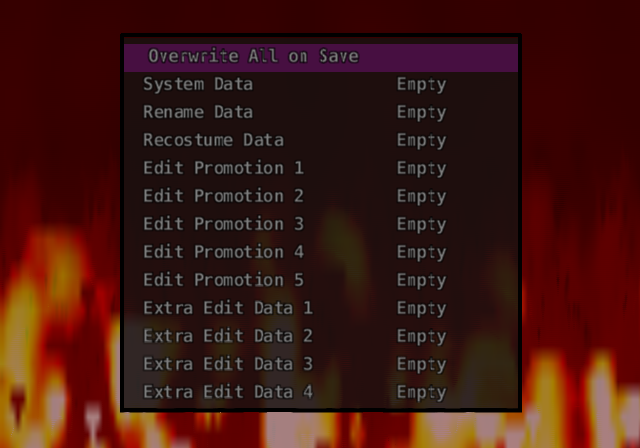
The game loads from the memory card by itself at boot and needs at least 64 KB free to save its system data. You can start without a card; it asks first. Save your progress from Save / Load on the main menu. If Save Confirm is on in Options, the game also offers to save when you leave a screen that changed something.
A full set of files takes about 312 KB. On the card they sit in a folder called BISLPM-62287, which is worth knowing if you back up your saves: the number doesn't match the disc's serial, and that is normal. The card's title stays in Japanese.
Saves from the original Japanese game, or from a different patch, may not be compatible. Start a new save with the patch you plan to keep.
Quick Save is separate. Story mode, Victory Road, tournaments and leagues each keep their own place inside System Data; One Night Match, Battle Royal, Elimination and Title Match have none. It's offered between matches. Remember that this is still only memory: save to the card from Save / Load, or say yes when the game asks, before you turn it off.
Your First Match
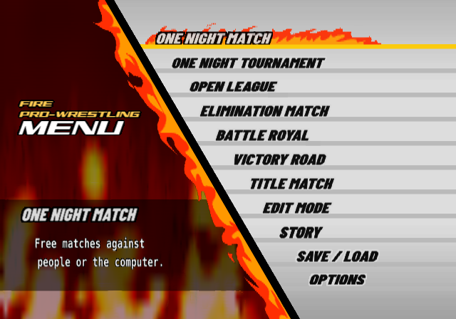
The game has no tutorial and no controls screen, and the printed manual barely helps. Spend ten minutes on this and everything else will make sense.
- On the main menu choose One Night Match, then Normal Match.
- On Match Settings, set COM Level to 1 with Left and Right. Leave the rest. Press Start to go on.
- Choose a wrestler you like. Heavyweights with a simple move set, like Toshiaki Kawada, are forgiving. Choose an opponent.
- When the bell rings, walk into him. No button: touching him starts the lock-up.
- Count to one, then press □ once. Your wrestler does a small grapple move. Weak grapples like this can never be reversed. Do it again.
- After a few of those, try ×, then later ○. Those are bigger and hit harder, but on a fresh opponent they will get reversed.
- Knock him down. Stand at his head and press × or ○ for a ground move. Find the pin in your wrestler's list, or press □ to pull him up.
- When he can barely get up, use your finisher and pin. A pin only sticks on a wrestler who's nearly finished. If you get pinned, hold ×.
There are no health bars. You read the match from the wrestlers: a slow get-up, slumped shoulders, a stagger. That is the game. Next, read Grappling, because the lock-up decides almost everything.
Controls
If you played D: its A, B, X and Y are ×, ○, □ and △ here, and L and R are L1 and R1.
| Button | In a match |
|---|---|
| D-pad | Walk. With an attack button, choose the move. |
| □ | Weak attack. |
| × | Medium attack. Hold under a pin to kick out, or when down to stay down. Press to let go of your own hold. |
| ○ | Strong attack. |
| □ + × | The fourth attack, wherever there is one. Press both together. |
| △ | Run. In a grapple, Irish whip. Pick up or drop a weapon. |
| L1 | Hold to catch your breath. Tap with a direction to tag. Tap to dodge a runner. |
| R1 | Hold to keep your target and walk freely. Tap in a grapple for a front facelock. Drag a downed opponent. |
| Left stick | Four taunts: Left, Right, Up, Down. |
| Start | Pause: Continue or To Mode Select. |
| Right stick, L2, R2, Select | Nothing in a match. |
The Diamond View
This trips up everyone once. The camera looks at the ring from a corner, so the four posts are at the screen's left, right, top and bottom, and each rope runs along a screen diagonal. So when this guide says toward the ropes it means a diagonal on the D-pad, and toward a post means a plain Left, Right, Up or Down.
Grappling
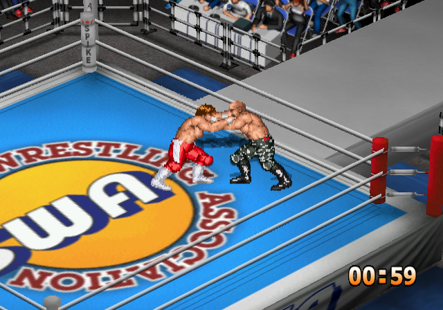
Walk into your opponent and both wrestlers lock up. Neither can act for a moment. Then comes the one piece of timing that matters more than anything else in Fire Pro.
- The window opens 33 frames after contact, a little over half a second, at the moment the wrestlers sink at the knees.
- The first press after that wins the grapple. The window never closes: if neither side presses, they stand there.
- Press too early and you are locked out for 32 frames, counted from that press. More presses in that time are ignored. This is why mashing loses grapples.
- Only a fresh press counts. Holding the button down beforehand does nothing.
Any of □ × ○ △ R1 L1 takes the window. If both sides press on the very same frame while both are above about 81% stamina, you get a Test of Strength instead: fresh D-pad presses score, up to six rounds, and the most presses wins.
The CPU's speed is its difficulty. Here is how quickly it presses, counted in frames from contact, with the window opening at 33:
| COM Level | CPU pressed on frame | What that means |
|---|---|---|
| 1 | 36 to 103 | Easy to beat every time. |
| 2 | 34 to 62 | Comfortable practice. |
| 4 | 34 to 47 | Half the time within a frame or two of the opening. |
| 6 | 34 to 39 | You need to be on it. |
| 8, 10 | 34, every time | You have one frame. You'll lose most of these, so fight another way (see Against the CPU). |
In a front grapple
| Input | Does |
|---|---|
| □ alone, or with Up, Left/Right, Down | Weak grapple. Four slots. |
| × alone, or with Up, Left/Right, Down | Medium grapple. Four slots. |
| ○ alone, or with Up, Left/Right, Down | Strong grapple. Four slots. |
| □ + × | The fourth grapple. Usually the wrestler's biggest. |
| R1 | Front facelock: walk him around. It lasts about half a second on a fresh opponent and up to nearly five on a spent one. It can be reversed. |
| R1 near the ropes | Throw him to the apron. Up or Down picks which way you face. |
| △ | Irish whip. Up or Down picks the direction. |
| △ + Left or Right near that side's post | Ram him into the post. Only the left and right posts work. |
| △ straight at ropes you are standing beside | He goes out of the ring. From the floor by the apron, this throws him in. |
Behind him
| Input | Does |
|---|---|
| □, ×, ○ | Back grapples, weak to strong. |
| ○ + Up or Down | Second strong back grapple. |
| ○ + Left or Right | Third strong back grapple. |
| □ + × | Fourth back grapple. |
| △ | Whip him away. |
| R1 | Hold his arms for your partner. |
| R1 + Up | Lift him onto your shoulders. |
| Grabbed from behind: □ or × in the window | Reverse it (Back Rev). |
Striking
| Input | Does |
|---|---|
| □ / × | Weak and medium strike. |
| ○ | Strong strike. |
| ○ + any direction | Second strong strike. |
| □ + × | Fourth strike. |
| A runner is coming: □ / × | Counter him. |
| A runner is coming: L1 | Dodge: a duck, leapfrog or slide, by Fight Style. Some styles have none. |
Strikes aren't checked for reversals, need no timing, and work against CPU levels you can't out-grapple.
Running and Flying
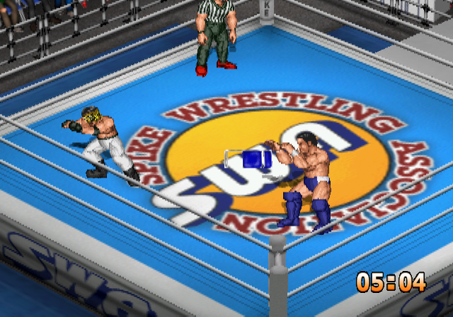
| Input | Does |
|---|---|
| △ | Run. The direction comes from what you hold. Left or Right on the ring's middle line runs the long diagonal, post to post. |
| Tap a direction opposite your run | Stop. It has to be a fresh press. Few players know this one. |
| □ / × while running | Running attack. |
| Hold ○ at a downed foe | Running attack on a downed opponent (Run Down). |
| Hold ○ at the ropes, foe outside | Dive through the ropes (Run Out). Press early: the game reads his position when you reach the ropes. |
| On the diagonal, hold ○ at a foe in the corner | Run Corner. |
| On the diagonal, hold □ or × into the post | Run-Up move. Needs Climb/Run Up set to Run Up. |
Running costs 12 breath a frame, and an empty tank stops you dead. Luchadors and Panthers may hop onto a post by themselves on a diagonal run.
When you are whipped, □ on the exact frame you hit the ropes grabs them and stops you, and × stops the rebound and lets you run on under your own control. It really is one frame, so treat it as a party trick. Some styles grab the ropes by themselves.
Top rope
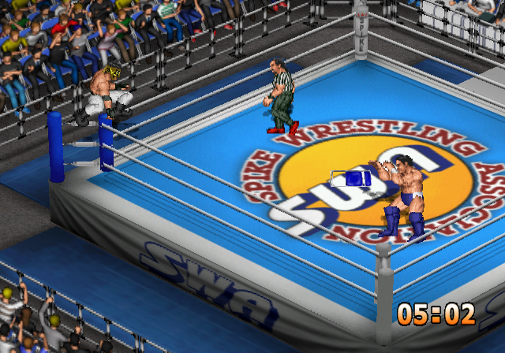
| Input | Does |
|---|---|
| □ or × + plain direction, standing by a post | Climb. Any of the four posts, unless the wrestler is set to Can't Climb. |
| On the post: □, ×, ○, □ + × | Four top-rope moves. |
| On the post: Down | Climb down. |
| Foe on a post: □ or × toward him | Grab him up there, from below or the apron. |
Climbing adds to a downed foe's wait before he gets up, a little from the ring and twice as much from the apron, so dives have time to land.
Ring edge, apron and floor
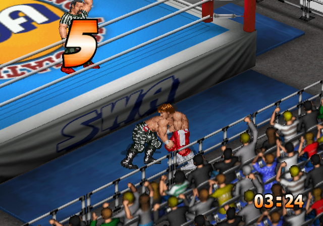
| Where | Input | Does |
|---|---|---|
| In the ring, by the ropes | □ + diagonal to the ropes | Drop to the floor. |
| × + diagonal to the ropes | Step out onto the apron. | |
| ○ + diagonal, foe outside | Springboard out (Apron Out). | |
| On the apron | □ or × toward the ring | Step back in. |
| □ or × toward the floor | Drop down. | |
| ○ toward the ring | Springboard in (Apron In). | |
| □ toward the post | Climb it. | |
| × toward the post | Swing round to the next side. | |
| R1 toward the ring, foe close | Grab him over the ropes. | |
| On the floor, facing the ring | □ toward the ring | Roll straight in. |
| × toward the ring | Get onto the apron. | |
| △ toward the ring | Pull a weapon from under the ring. At most three can be out. |
Downed Opponents, Pins and Holds
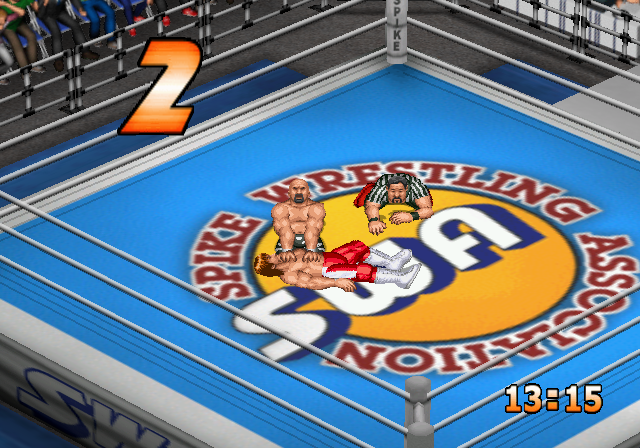
Stand at his head or his legs. The wrestler turns to face him by himself. Moves on a downed opponent can be reversed in Z, so soften him up first.
| Position | □ | × | ○ | R1 |
|---|---|---|---|---|
| Head, face up | Lift by the hair | Up Head | Up Head | Drag |
| Legs, face up | Roll him over | Up Legs | Up Legs | Drag |
| Head, face down | Roll him over | Down Head | Down Head | Drag |
| Legs, face down | Lift by the tights | Down Legs | Down Legs | Drag |
R1 drags on its own: holding a direction changes nothing. Up Head and the rest are the Move Edit rows of those names. Every wrestler keeps a pin or two there, so check his list.
When you are underneath
| Situation | Input | Does |
|---|---|---|
| Being pinned | Hold × | Kick out, once your pin timer has run down. See How Pins Are Won. |
| In a submission hold | Fresh D-pad presses | Each press takes time off the hold, and any direction counts. Holding a direction does nothing, and neither do the buttons. |
| Down, able to rise | Hold × | Stay down. Uses spirit, and works for up to six rolls. |
| Down, holding × | Up or Down | Roll. At the ropes this takes you out of the ring: a free breather. |
| Getting up | Hold □ or × | Stay crouched a moment longer. Strikes pass overhead. |
| Stunned | Any button, fresh presses | Wake up sooner. |
Your own pin or hold: × lets go, which also stops a Foul Count.
Guard, Facelock and Mount
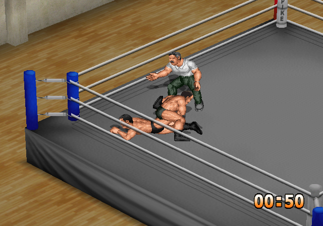
Some moves put you into a timed position on the mat: Guard (facing him, called Mount in D), Front Facelock and Back Mount. On top you get □ × ○ attacks. Underneath, any button answers with a reversal. They run on the same window and lockout as a lock-up, so watch for the legs wrapping or the torso leaning back, and press once. In Move Edit these are the rows Guard Atk and Guard Rev, FL Atk and FL Rev, Mount Atk and Mount Rev. In this game "Mount" always means the back mount.
Weapons
Weapons wait under the ring. On the floor, press △ toward the ring to pull one out. To pick up one at your feet, press △ and hold Down, because a plain tap makes you run. With a weapon, △ drops it, and three attacks are new in Z: □ a jab, × a side swipe and ○ a head shot, doing roughly 2%, 5% and 10% of a fresh foe's stamina. The range is narrow, and the weapon stays in your hand after a swing. Grappling, taking a hit or being run into knocks it out of your hand. In a Tubes match, △ plus a plain direction to a post takes a light tube.
Tag and Team Matches
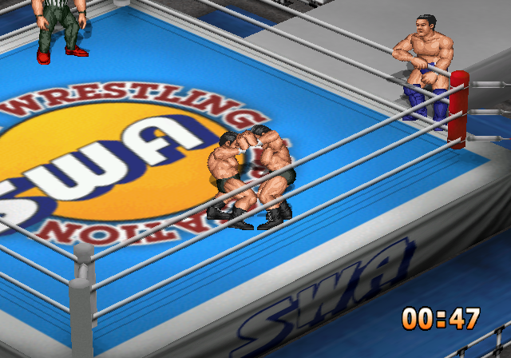
| Input | Does |
|---|---|
| L1 + the diagonal toward your partner | Tag, near his stretch of rope. Works while walking a foe in a facelock too. |
| Partner being pinned or held: □ or × near him | Run in and break it up. Needs Cut Play on. |
| Two or three of you on one foe, any button at the window | Double-team and triple-team moves (Front, Back and Corner Duo or Trio). |
| Hold R1 | Keep your target in a crowd. Let go and the nearest foe is your target again. |
Tagging is off in Tornado Battle, where everyone is legal at once.
Menus
○ confirms and × goes back. Left and Right change a value. Start goes on from a settings screen to wrestler select. R1 or L1 held scrolls a long list twice as fast, and R1 with Left or Right steps by ten on some rows. In the story, ○ turns the page and Start opens Continue and Quit. On Match Settings' ON and OFF rows, Left is ON and Right is OFF.
How Matches Work
You never see any of these numbers in play, which is how Fire Pro likes it, but they explain why matches go the way they do. A full gauge is 100%.
Stamina, Spirit, Breath
| Gauge | What it does | How it comes back |
|---|---|---|
| Stamina | Falls with every hit. It decides reversals: the lower your stamina, the less you can reverse. Oddly, a worn-out wrestler takes up to 25% less damage. | Slowly by itself, and faster while you hold L1. |
| Spirit | Pays for staying down and for a last-moment kick-out. When a submission hold empties it he gives up, however much stamina is left. | Not by itself at all. Taunts, breaking a hold and landing your signature moves raise it. |
| Breath | Pays for moves and running. Low breath cuts your damage by up to 12% and your walking speed. | Slowly by itself. Hold L1: 18 times faster, about 10 seconds from empty to full. |
| Neck, arm, back, leg | Damage by body part. A hurt arm or leg weakens the moves that use it, down to 75%. Hurt legs also slow you. | They don't recover during a match. |
L1 only works while you are free, not in a grapple. Slumped shoulders mean a wrestler is out of breath. A simple habit is to take a breather whenever your opponent is down or outside.
Reversals
There is no reversal button. The move's own numbers and the defender's stamina decide it, the moment you commit to a move. This table is the most useful one in the guide. It shows the typical chance of a reversal, in percent, for each list of moves, with an Orthodox defender:
| Move list | 100% stamina | 75% | 50% | 25% | 5% |
|---|---|---|---|---|---|
| Grapple □ weak | 0 | 0 | 0 | 0 | 0 |
| Grapple × medium | 80 | 30 | 25 | 10 | 5 |
| Grapple ○ and □+× strong | 95 | 70 | 40 | 20 | 10 |
| Bk Grapple weak | 0 | 0 | 0 | 0 | 0 |
| Bk Grapple medium | 30 | 15 | 10 | 5 | 10 |
| Bk Grapple strong | 80 | 60 | 30 | 10 | 5 |
| Corner | 80 | 60 | 30 | 10 | 10 |
| Up/Down Head | 0 | 0 | 0 | 0 | 0 |
| Up/Down Legs | 0 | 5 | 10 | 5 | 15 |
So the rule of thumb: weak grapples always land, medium ones are safe from about 75% down, and strong ones from about half. That's why a match has a shape, with small moves first and big ones later, and it's the game's design, not a convention. Each move has its own value, so treat these as tendencies. Four of the 58 weak grapples can be reversed, and some strong moves never can.
The defender's Reversals type shifts the row, and style and size add a little. Strikes, dives, top-rope moves and double-teams aren't checked at all. When a reversal fires, the attacker is locked out for 32 frames.
How Pins Are Won
When a pin lands, the pinned man gets a timer based on the stamina he's missing. Until it runs out, × does nothing. Once it does, holding × kicks out free, at any spirit. Tapping is no faster than holding.
| His stamina | Frames until he can kick out | The referee's count by then |
|---|---|---|
| 100% | 8 | 0 |
| 75% | 60 | 0 |
| 50% | 112 | 1 |
| 25% | 164 | 2 |
| 12% | 190 | 2 |
| 0% | 207 | 2 |
The referee has to walk over first, then takes about 160 frames from his arrival to the 3. If the timer is still running in the last three frames before the 3, there's one more chance: holding × with spirit above 25% costs 9.4% of the gauge and kicks out. At 25% or less, the pin holds.
So a pin sticks when a wrestler is nearly out of stamina, about 8% or less, and at 25% spirit or less, and the referee is close. Low spirit alone doesn't do it. Leave a pin unanswered and it's a 3 every time, so always hold ×. Under SWA Rules, a wrestler above half stamina can kick out at once.
Submissions are decided by spirit, not stamina. He gives up when spirit reaches 0, even with plenty of stamina left. A man with no stamina but spirit in hand can sit in a hold for minutes. Escape with fresh D-pad presses: each takes 7 frames off a timer that's also falling by itself, so pressing every 4 frames breaks a hold in about 87 frames, and every 32 frames takes 225. The press that breaks it gives you some spirit back. The timer stops at 0 and the hold goes on until your next press, so keep pressing. A wrestler with the Guts skill gives up only 5% of the time when his spirit runs out. Rope Break is automatic if he reaches the ropes, so drag him to the middle first with R1.
Damage
A move's damage is its base number, scaled by the attacker's and defender's ratings in the move's types. The main type counts three times as much as the sub type:
damage = base x (3 x main attack + sub attack - 3 x main defence - sub defence + 64) x 4 / 256
Ratings here run 3 to 12 (the 1 to 10 on screen, plus 2). Equal ratings mean each point of base damage takes 0.39% of a gauge: a Jab at 4 takes about 1.6%, a Piledriver at 25 about 10%. A top-rated attacker on a bottom-rated defender does half as much again, and the reverse less than half. A finisher adds 2 to the attack, a signature move adds 1. The result is then multiplied by the defender's stamina, the attacker's breath, any hurt body part the move relies on, skills, and size:
Body-part damage is then multiplied by that part's Durability: Low 125%, Normal 100%, High 75%. Height, weight and class aren't used in a match at all. Only Size is.
Criticals
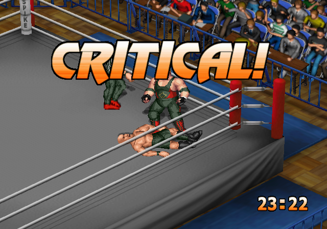
A critical is Fire Pro's knockout: a move lands so well that CRITICAL! flashes across the screen and every gauge it touches drops to zero. A hold becomes an instant give-up, and anything else leaves the victim out for about five seconds. Lift him before the referee notices and the match goes on.
You don't press anything. On each damaging hit, the attacker's Critical type must match the move, and two rolls must pass: one from the formula below, then a flat 10%. Finisher type only works with the wrestler's marked finisher. Critical % in Match Settings turns them off, halves or doubles them.
chance % = A[type, attacker's style] x R[type, victim's Reversals] x S[type, victim's stamina] / 1000, then a 10% roll
Misawa, a Striking type with Technician style, on an Orthodox defender at a moderate stamina comes to 17 from the formula, then the 10% roll: 1.7% per qualifying hit. Over a long match of elbows that adds up. A style gets much more from the type that suits it:
A: the attacker's Fight Style
R: the victim's Reversals type
S: the victim's stamina
Empty on the left, full on the right. Finisher and Power criticals can't happen above about 70-75% stamina, while Technical and Submission ones like a fresh opponent. That's why Fujinami can catch you early and Vader can't.
Skills change the chance too: Focus halves it, Flexibility quarters it and Comeback doubles it. Hits inside a held move can't critical. Focus and Flexibility don't reduce Finisher-type criticals.
Fight Styles
Fight Style is the most important choice on a wrestler, and it does far more than pick an animation.
Reach scales how close a move connects. Own damage scales what a move costs its user. Stop at ropes is the chance that a whipped wrestler stops at the ropes rather than rebounds, from tired to fresh, and it's why a Fighter won't bounce off the ropes for you. It doesn't apply when he runs by himself. Whip reversal is the chance a whipped wrestler turns it round, new in Z for Shooter, Fighter and Grappler. Fighters, Grapplers and Tigers refuse the whip instead: both men struggle and nobody is thrown. Bleeding hurts almost everyone's spirit, but Heels, Mysterious wrestlers, Grapplers and Inoki's Devilish style get stronger from it.
Breath cost by style
Using a move costs breath: the slot's base cost, times this table by style and the move's main type, times a stamina and a size factor. 256 is normal. Lower is cheaper, and the last column is running. This is why a Junior can fly all night and a Giant can't.
Size scales it too: Male S pays 80%, Male M 90%, Male L 100%, Women 90%.
Special Skills
The Other Ratings
- Breathing sets all passive recovery, of breath and stamina. Good is about a third better than Normal, and bleeding roughly halves it.
- Recovery and Recovery (Bleeding) do nothing, though they still cost edit points. Don't spend on them. Getting up depends on the blow, the wrestler's stamina and Quick Return.
- Spirit scales the spirit you gain: Weak 75%, Normal 100%, Strong 125%.
- Move Speed drops one step under half leg, another at an empty leg, one under half breath and another under a quarter.
- Climb Speed: Juniors, Luchadors and Tigers at Fast also get a quicker climbing animation.
Strategy
Winning a Match
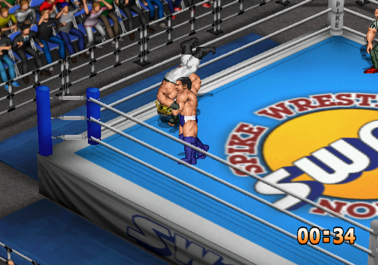
- Open small. Weak grapples can't be reversed, so □ moves are free damage. Strikes work too.
- Move up as he tires. × from about three quarters, ○ from about half. You have no bar to read, so watch for gasping, slow get-ups and staggering.
- Breathe. Three seconds of L1 gives back about a third of your breath. Do it whenever he is down or outside, roughly every two minutes on the clock. The clock runs at double speed: a clock second is half a real second, so 8:00 on it is four real minutes.
- Build to the finisher. Finishers do more and raise your spirit. Signature moves too.
- Pin when he's spent. A pin only sticks at about 8% stamina with spirit at 25% or less, so big moves first. A pin on a fresher man just gets kicked out free.
- Pin in the middle, next to the referee if you can. Drag him off the ropes with R1 first.
Two advanced tips. After a × grapple the victim usually stays down, which sets up a dive at a downed foe, and after a ○ grapple he rises dazed, which sets up a dive at a standing one. And a worn foe lifted with □ at the head stands dazed, open to strong strikes or a grapple from behind.
Against the CPU
Up to about COM Level 4 you can win lock-ups by timing. Above that you'll lose most of them, and Tests of Strength are close to hopeless after Level 5, because the CPU joins a tie at the top almost every time. So stop fighting the lock-up:
- Strike. Strikes aren't reversal-checked, and steady strikes slow his walk and his grapples.
- Use the whole ring. Whip him into a post, then take the corner moves. Hit him as he gets up.
- Practise on Level 1. Count from contact: it's always 33 frames. A second player left idle is a good training dummy too.
- Roll out. Hold × and press Up or Down at the ropes to take a free breather on the floor.
The game has two bugs. A CPU wrestler near a corner can stop moving: hit him and he starts again. And wrestlers can occasionally freeze in the grapple pose, with hits passing through; the only way out is to abandon the match with Start.
Match Rules
Match Settings
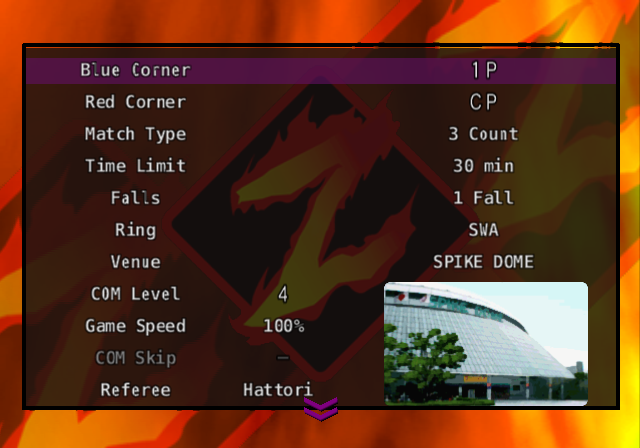
Every match starts from this screen. Twelve rows show at a time, and the list ends with - Next -. Pick a mode and match type below to see exactly which rows it has, what each one defaults to, and which are locked.
Match Types
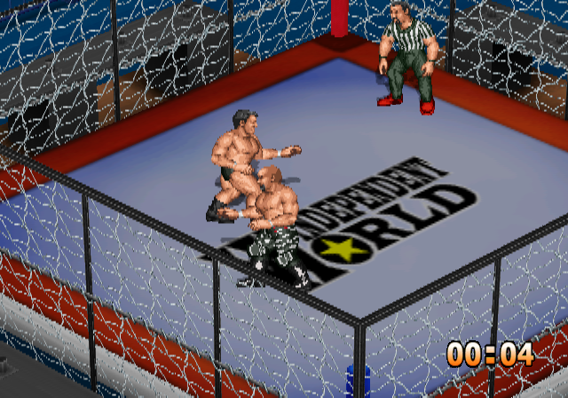
| Type | What it is |
|---|---|
| Normal Match | Anything goes in the settings. Nothing is fixed. |
| Exploding Cage DM | Kawashima Ballpark in the Deathmatch Ring, one fall. Rope breaks, Lumberjack, Tornado Battle, Cut Play, fouls and ring-outs are all off. Adds the Blast Timer. |
| Barbed Wire DM | Korakuen Hall, one fall. Corner Option picks Barbed Wire or light Tubes in the corners. The ring is your choice. |
| Gruesome Fighting | The mixed martial arts contest: Sub Only in the twelve-sided Dodecagon Ring at Bayside Coliseum, one fall, with every rope and count rule off. |
| SWA Rules Match | Foul Count is off and locked. A wrestler above half stamina has no down time after a move and can kick out of a pin at once, so you have to wear him below half before anything sticks. |
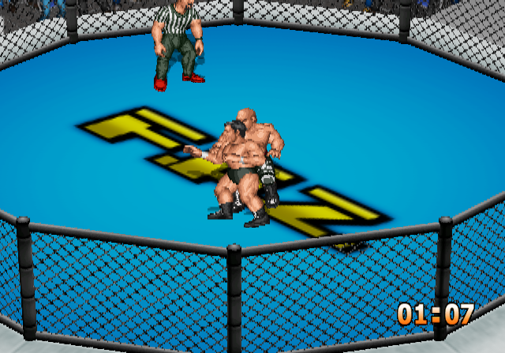
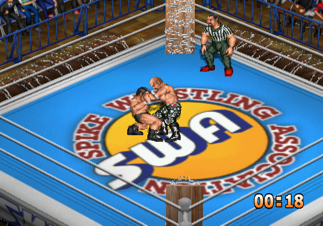
What the Settings Do
| Row | Meaning |
|---|---|
| Match Type | 3 Count is normal. 2 Count is a fast finish. Pin Only and Sub Only count only that way of winning. |
| Rope Break | A wrestler who reaches the ropes breaks a pin or hold. |
| Lumberjack | A wrestler thrown out of the ring is put back in. |
| Tornado Battle | Everyone's legal at once, with no tags. Multi-man matches only. |
| Cut Play | Partners may run in to break a pin or hold. Multi-man matches only. |
| Foul Count | The referee counts illegal holds and standing on a post. At 5 it's a DQ. Letting go or climbing down stops it, and the next count starts from 0. With this off, there's no post count either. |
| Ring-Out Count | The referee counts while you're on the floor. At 20 it's a ring-out, or a double ring-out if both are out. Getting back in resets it to 0, and the apron doesn't count. |
| Critical % | None, Low, Normal, High: off, half, normal, double. |
| COM Level | 1 to 10. The default is 4. |
| Game Speed | 100% up to 800%. Useful for watching CPU matches. |
| COM Skip | In tournaments and leagues, decides CPU-against-CPU matches off screen. |
| Match Music | ○ on this row plays the song. |
Results
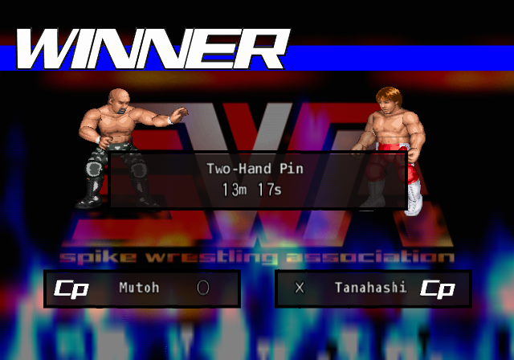
You can win by Pinfall, Submission, KO Win, Ring Out Win or DQ Win. A match can end drawn as a Time-Up Draw, Ring-Out Draw, KO Draw, Double Ring-Out or Double KO. Big occasions finish with a 3D word: CHAMPION, VICTORY, DEFENDED, CONQUEST or NEW CHAMP.
Rings
The Ring row lists these in order, plus RANDOM. Edit promotions' rings follow them. The Deathmatch Ring and Dodecagon Ring belong to their match types, and the All Unlocked patches add seven more.
Venues
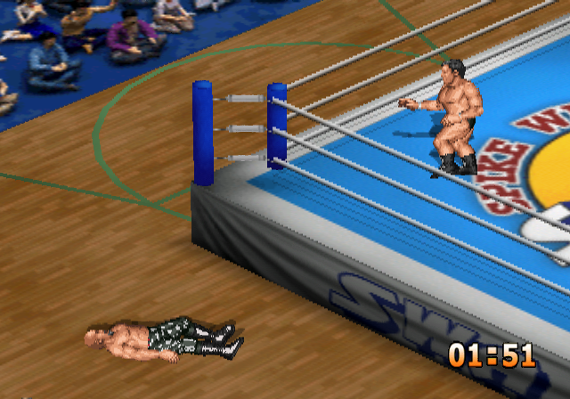
Referees
Every referee has a character: Hattori is even, Soranaka is fast on all three counts, and Higuchi is slow on them. Foul and Ring-Out counts take 117, 102, 87, 72 or 57 frames a count from Slow to Fast. Pin Count changes far less, from 69 to 61 frames a count.
Match Music
Fifteen songs and RANDOM, spelled as the game spells them. Wrestler themes are a separate list of 47, set in Skill Edit.
Modes
The main menu has eleven entries. Four players can join on a Multitap in every mode except Story and Edit Mode. Starting with a side on a pad that isn't plugged in gets a warning, and the game offers to hand that side to the CPU.
One Night Match
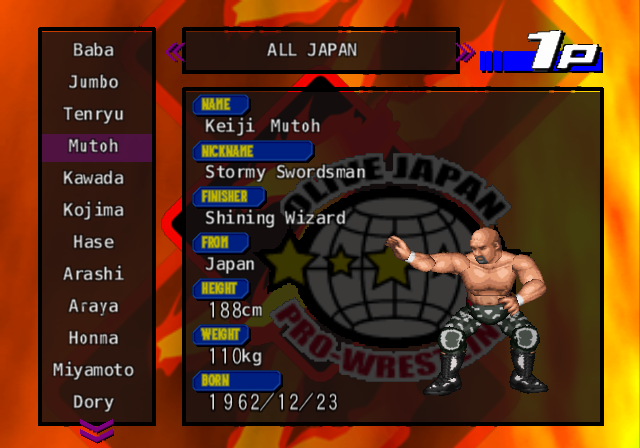
Free matches. Pick a match type, adjust Match Settings, choose wrestlers, fight, and return to the settings. Each side can have one to four wrestlers, and sides can differ. A side's pad setting decides who plays: 1P to 4P or CP, and in a tag the pads are set per wrestler, so 1P-CP has the computer as your partner and 1P-1P gives one pad every member of the team.
One Night Tournament
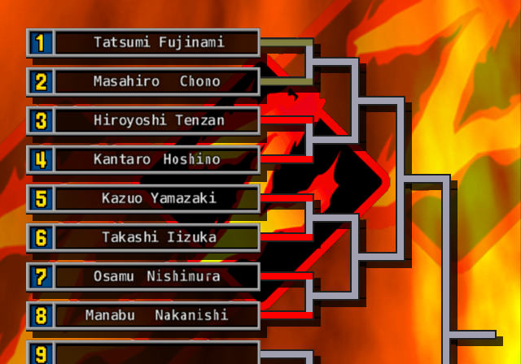
A knockout of 3 to 16 entries. Choose a match type, name the tournament, set the rules and fill the entries. Each entry can be a team of up to four. Time Limit is locked to No Limit and ring-outs are off, because a knockout needs a winner. On the bracket, Start opens the menu: Match, Auto, Quick Save, Quit. Auto lets the CPU play out the match.
Open League
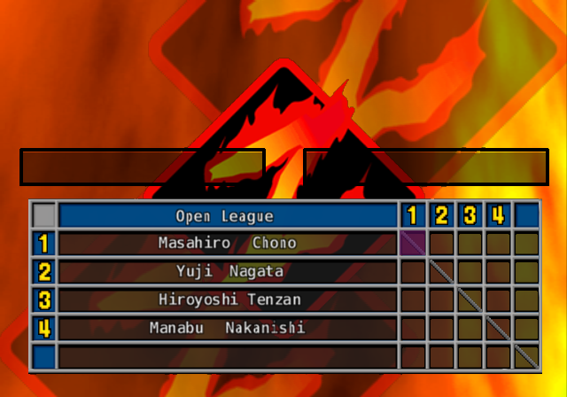
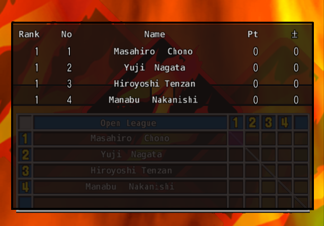
A round-robin of 4 to 64 entries. It adds Point Type, 5 Points or 2 Points. The menu is Match, Rankings, Auto, Quick Save, Quit. Sixty-four entries is 2,016 matches, so turn on COM Skip.
| Result | 5 Points | 2 Points |
|---|---|---|
| Pinfall, submission or KO win | 5 | 2 |
| Ring-out or DQ win | 4 | 2 |
| Time-up draw | 2 each | 1 each |
| Double ring-out | 0 each | 0 each |
| Loss | 0 | 0 |
The league ends when you choose Quit, which shows the champion. If two or more entries are tied at the top, the game asks Hold the final league?, and Yes starts a new league among the tied entries.
Elimination Match
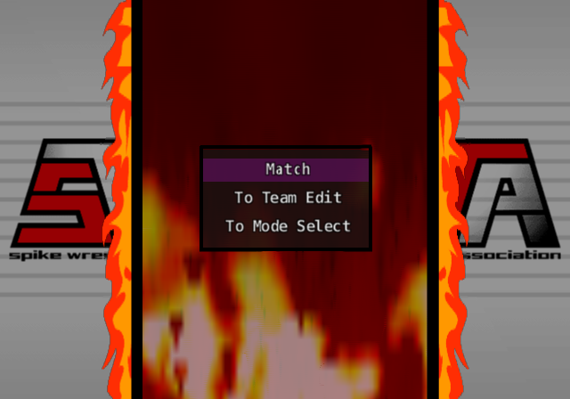
Five-on-five team battles. Three formats:
- Elimination: the winner stays on, and the loser's side sends in its next man.
- Round Robin: five bouts by position, 1st against 1st through Captain against Captain, scored with the league points table.
- Round Robin (Tug): the same five bouts, at 1 point a win and 0 for a tie. All five are fought even if one team goes up 3-0, and the most points wins. If it ends level, each side picks any member of its team, and they wrestle until someone scores a point. That point wins it.
Teams come from the 29 presets or your own eight edit teams, made here under To Team Edit. Set the order from 1st to Captain, as the Japanese team-match tradition has it. Only five slots, so the Captain should be your best.
Battle Royal
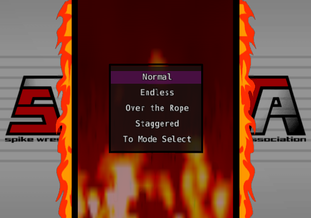
Three to eight wrestlers, every man for himself.
- Normal: a fall takes a wrestler out, and the last man wins.
- Endless: a beaten wrestler is ranked but stays in the ring and fights on, until one unbeaten man is left.
- Over the Rope: as Normal, and anyone off the ring is out at once, floor or apron.
- Staggered: set the order first. Two start and the next enters every 2 minutes on the clock. There's no time limit, and a lone survivor waits for the next entry.
Victory Road
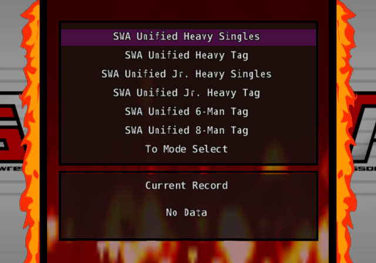
The long haul, and the way to unlock the rest of the game. Choose one of six courses, choose a wrestler, then take on promotions in any order. Each promotion is a fixed ladder of opponents, climbing in COM Level. The progress screen counts down Conquest in: n wins for this promotion, and Title in: n wins and Left to conquer: n promotions overall. Take them all and the title is yours and the staff credits roll.
The time limit is 60 minutes. You can only change Game Speed, Tornado Battle, Cut Play and Critical %, and those are kept per course. After a win: Next Match, Quick Save or Quit. A loss isn't the end: you get Continue, against the same opponent, with your count unchanged, as often as you like.
Blue Corner can only be 1P or CP, so a second player can't join, but set it to CP and the computer plays the match for you, and its wins count. That's the easy way through 343 wins. Junior courses list only Junior and Free class wrestlers.
| Course | Wins in all | Promotions |
|---|---|---|
| Unified Heavyweight Singles Title | 166 | 16 |
| Unified Heavyweight Tag Title | 52 | 10 |
| Unified Jr. Heavyweight Singles Title | 61 | 10 |
| Unified Jr. Heavyweight Tag Title | 27 | 9 |
| Unified 6-Man Tag Title | 24 | 1 |
| Unified 8-Man Tag Title | 13 | 1 |
The quickest course to clear is 8-Man Tag at 13 wins, then 6-Man Tag at 24, and either one opens Title Match and the ten extra teams. Pick a course and promotion below to see every match on the ladder.
Title Match
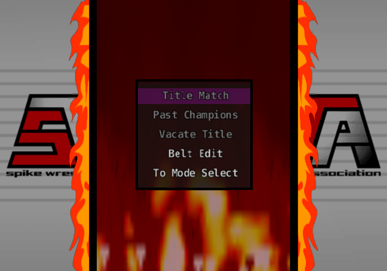
Opens after you clear one Victory Road course. You make the belts yourself in Belt Edit: up to eight, each with a name, Plate, Sub Plate and Belt colours, then Type (Singles, Tag, 6-Man Tag, 8-Man Tag), Class (Heavyweight, Jr. Heavy, Open) and Match Type. Class limits who can be picked. A new belt's first match crowns a champion, and it's fought with No Limit and no ring-outs so somebody wins it. After that, defend it under free settings. Past Champions keeps the line of title holders and defenses, and Vacate Title frees a belt.
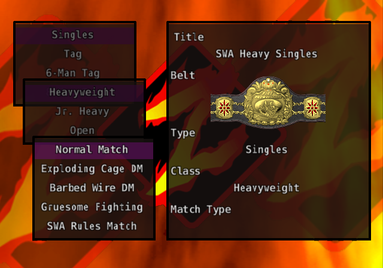
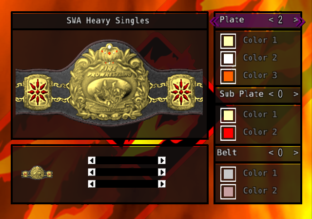
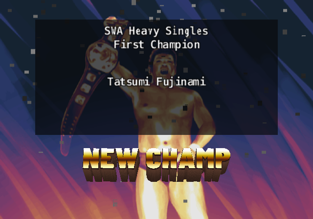
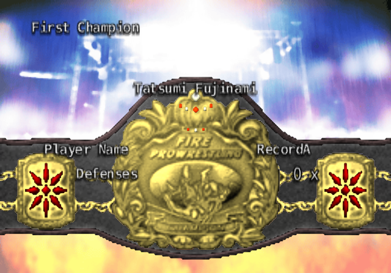
Options
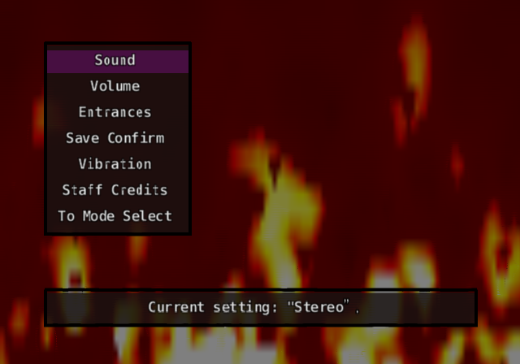
| Row | Values | Default |
|---|---|---|
| Sound | Stereo, Mono | Stereo |
| Volume: Match Music, Theme Music | Off, Low, Medium, High | Medium |
| Entrances | Off, On | On |
| Save Confirm | Off, On | On |
| Vibration | Off, On | On |
| Staff Credits | Plays the roll | Hidden until you clear a story or a Victory Road course |
Unlocks
Everything comes from two counts: different story scenarios cleared, with any ending, and Victory Road courses cleared, any six. Clearing Misawa twice counts once.
What opens what
| You need | It opens |
|---|---|
| Nothing | Four story scenarios, 199 wrestlers, 29 preset teams, 150 edit points. |
| 1 story clear | The 45 hidden wrestlers, 200 edit points, Staff Credit in Options. |
| 1 Victory Road course | Title Match, 10 extra preset teams, Staff Credit. |
| 1 story clear and 1-2 courses, or 3 or more courses with fewer than 5 stories | 250 edit points. |
| 4 story clears | Atsushi Onita's story. |
| 5 story clears | Kazushi Sakuraba's story. |
| 5 story clears and 3 courses | 300 edit points, 17 extra faces. |
Edit points stay at 150 until a story is cleared, however many courses you finish.
The fast path: clear stories by the shortest ending (each walkthrough names it), since a story ends whether you win or lose. Then take the 8-Man Tag course, 6-Man Tag and one more for the three courses.
Extra faces 387 to 403 are joke and anime heads. Hold □ and press Left or Right on the Face row for their full presets. Two use bodies called Bear and Builder. No built-in wrestler uses any of them.
The seventh scenario can't be opened by play at all. See below.
The Hidden Seventh Scenario
Jushin Thunder Liger's story
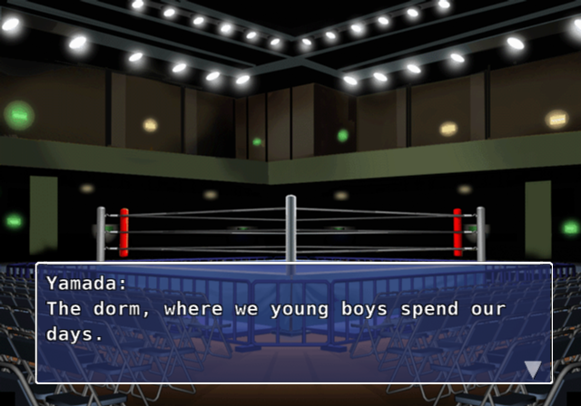
The disc holds a complete seventh script: Keiichi Yamada, a small boy in the New Japan dojo, becomes Jushin Thunder Liger. It's 125 scenes with a route split between New Japan and the UWF, and two endings. The game can't reach it. No list includes it, it starts at a developer chapter menu like a test file, and every match is only a card with a Win or Lose menu. Nothing in it raises the score, so one scene could never be seen.
This translation's All Unlocked patches finish the job: 26 real matches with their rules and venues, a Wild Pegasus built from Fire Pro Wrestling S's data, a young Yamada, and Game Over with Retry where the script calls for them. The story itself is the game's, translated. The walkthrough is on the Story page.
On the Disc but Not in the Game
Developer leftovers
- Unused rings: seven ring designs with no menu entry, including Pale Blue, Lilac and NONNON. All Unlocked adds them.
- Network Mode and Memory Card menu entries sit unused in the main menu's art, and the code for D's downloads survives with nothing to load.
- A developers' mode select and match debug readouts: stamina, damage and pad input displays built for testing.
- Unused music: five story-type songs no scene calls.
- Six finished moves that no list offers, and 396 slots marked reserved.
- Twelve story-only wrestlers who never reach the roster, among them Chavo Guerrero, Seiji Sakaguchi, Rick Rude, Ric Flair and Scott Steiner.
The full account is in the project's hidden content notes.
Japanese Glossary
For anyone moving between this translation and the original, or reading a Japanese site.
| Japanese | Romaji | Meaning | On screen in the translation |
|---|---|---|---|
| ワンナイトマッチ | wan naito matchi | one-night match | One Night Match |
| オープンリーグ | oopun riigu | open league | Open League |
| イリミネーションマッチ | iriminēshon matchi | elimination | Elimination Match |
| バトルロイヤル | batoru roiyaru | battle royal | Battle Royal |
| ヴィクトリーロード | bikutorii roodo | Victory Road | Victory Road |
| タイトルマッチ | taitoru matchi | title match | Title Match |
| エディットモード | editto moodo | edit mode | Edit Mode |
| 試合形式 | shiai keishiki | match format | Match Type |
| 試合時間 | shiai jikan | time limit | Time Limit |
| 試合本数 | shiai honsuu | number of falls | Falls |
| 一本勝負 / 三本勝負 | ippon shoubu / sanbon shoubu | one fall / best of three | 1 Fall / 2 of 3 Falls |
| 無制限 | museigen | unlimited | No Limit |
| 試合会場 | shiai kaijou | venue | Venue |
| 青コーナー / 赤コーナー | ao / aka koonaa | blue / red corner | Blue / Red Corner |
| 対戦形式 | taisen keishiki | matchup | Matchup |
| ロープチェック | roopu chekku | rope check | Rope Break |
| ランバージャック | ranbaajakku | lumberjack | Lumberjack |
| 反則カウント | hansoku kaunto | foul count | Foul Count |
| 場外カウント | jougai kaunto | ring-out count | Ring-Out Count |
| 爆破時間 | bakuha jikan | blast time | Blast Timer |
| 金網爆破 | kanaami bakuha | exploding cage | Exploding Cage |
| 有刺鉄線 | yuushi tessen | barbed wire | Barbed Wire |
| 蛍光灯 | keikoutou | fluorescent tubes | Tubes |
| 総当たり戦 | souatari sen | round robin | Round Robin |
| 勝ち抜き戦 | kachinuki sen | knockout | Elimination (format), knockout (help text) |
| 綱引き | tsunahiki | tug-of-war | Tug |
| 大乱闘 | dairantou | big brawl | big battle royal |
| 先鋒 次鋒 中堅 副将 大将 | senpou, jihou, chuuken, fukushou, taishou | team positions | 1st, 2nd, 3rd, 4th, Captain |
| 勝 / 敗 / 分 | shou, hai, bun | win, loss, draw | W, L, Draw |
| 反則勝ち | hansoku gachi | win by foul | DQ Win |
| 時間切れ引き分け | jikangire hikiwake | time-up draw | Time-Up Draw |
| 両者リングアウト | ryousha ringu auto | double ring-out | Double Ring-Out |
| 歴代王者紹介 | rekidai ouja shoukai | past champions | Past Champions |
| タイトル返上 | taitoru henjou | vacate the title | Vacate Title |
| 闘いの記録 | tatakai no kiroku | battle record | Record |
| 防衛回数 | bouei kaisuu | defenses | Defenses |
| 団体 | dantai | promotion | Promotion |
| 団体移籍 | dantai iseki | transfer | Transfer Wrestler |
| 技装備 | waza soubi | equip moves | Move Edit |
| 階級 | kaikyuu | weight class | Class |
| 必殺技 | hissatsu waza | finisher | Finisher |
| 返し技 | kaeshi waza | reversal | Reversals |
| 回復力 / 呼吸法 / 精神力 | kaifukuryoku, kokyuuhou, seishinryoku | recovery, breathing, spirit | Recovery, Breathing, Spirit |
| 耐久度 | taikyuudo | durability | Durability |
| 流血 | ryuuketsu | bleeding | Bleeding |
| 構え | kamae | stance | Stance |
| 性格 | seikaku | personality | Personality |
| 慎重度 / 柔軟性 / 協調性 | shinchoudo, juunansei, kyouchousei | caution, flexibility, teamwork | Caution, Flexibility, Teamwork |
| こだわり度 | kodawaridou | fixation | Fixation |
| 相性 | aishou | affinity | Affinity |
| 主攻撃 / 副攻撃 | shu / fuku kougeki | main / sub attack | Main / Sub |
| 上書き | uwagaki | overwrite | Overwrite |
| 未使用 / 新規 / 更新 / 保存済 | mishiyou, shinki, koushin, hozonzumi | unused, new, updated, saved | Empty, New, Edited, Saved |
| 中断 | chuudan | suspend | Quit |
| 続ける | tsuzukeru | continue | Continue |
Q&A
- Why do I keep losing lock-ups?
- You're pressing early, or more than once. Press one button, once, as the wrestlers sink. See Grappling.
- Why does my big move get reversed?
- He's too fresh. Strong grapples are reversed nearly every time at full stamina. Use weak ones first. See Reversals.
- Why won't my pin stick?
- He isn't spent. A pin only sticks at about 8% stamina with spirit at 25% or less. See How Pins Are Won.
- Where are the health bars?
- There aren't any. Read the wrestlers' bodies.
- How do I win a Sub Only match?
- Hurt the part his submission targets, drain his spirit, and hold on. In a rope-break match, take him to the middle first.
- How do I get the good ending?
- Long, close matches. The game's story score rewards a good match more than a quick win. See How Story Mode Works.
- Does Recovery do anything?
- No. Spend on Breathing instead.
- Why is Liger's story missing from my list?
- It's only in the All Unlocked patches. The original game can't reach it.
- Can I use my save from the Japanese game?
- Saves from the original or another patch may not be compatible. Start a new save with the patch you plan to keep.
- Can I play my edit wrestler in story mode?
- No. Story mode uses its own wrestlers.
- What's still in Japanese?
- The staff credits, the title logo, promotion logos, in-world art such as signs and T-shirts, and the memory card save title.
Credits and Legal
This is a fan-made guide, not affiliated with or endorsed by Spike Chunsoft, S-NEO, Paon or any wrestler or promotion named here. Fire Pro Wrestling Z is theirs. The guide's text is shared under CC BY-SA 4.0. Screenshots are of the English build, included for reference.
Thanks to the players who wrote about this game: Bill Wood, Frank Chan, the reviewers of PSmk2, Retro-Wres and the Game Data Library. The route map's layout uses dagre (MIT License).
Fatman Dave's 2004 menu patch inspired the translation.
AI assisted with this guide.
Corrections
Found something wrong, or something missing? Open an issue.